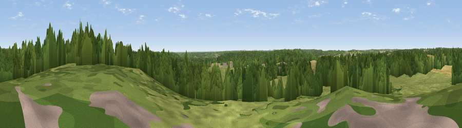

Viewpoint near Yattendon
#39663 in England · top 61% of its area beats it · near Yattendon · access?Where it is
The exact computed spot (SU 55925 74575). Click the marker for map links.
Public access: no public right of way or access land is recorded at this exact spot — it may be on private land. Computed from Natural England's CRoW access layer and OpenStreetMap rights of way — not the legal definitive map. Always verify locally.
The view, rendered

A 360° render of this exact spot computed from the terrain model, tree cover and land cover — summer colours, afternoon light, calibrated against photographs of famous viewpoints. Real trees, hedges and buildings will differ in detail.
The panorama
Grey silhouette: terrain skyline in each direction (720 bearings, Earth curvature and refraction included). Dashed green: skyline with trees (+15 m) and buildings (+8 m) as obstacles. Blue strip: how far the ground is visible on each bearing.
Where the view opens
Wedge length = distance to the farthest visible ground on that bearing (vegetation-aware). Rings at 10, 25 and 50 km.
What fills the view
41% woodland · 41% grassland · 16% cropland · 1% built-up
Angular shares of the visible panorama (visual magnitude), not map area. Landscape diversity 0.47 (0–1 Shannon).
Key numbers
More beautiful places nearby
The staircase of upgrades: each row has a higher view potential than everything closer. Driving times are estimates from straight-line distance, calibrated against real road routing — check an actual route before setting out.
| Place | Direction | Drive | Score |
|---|---|---|---|
| Viewpoint near Compton | NNW · 5 km | ~12 min | 44.3 |
| Viewpoint near Streatley | NNE · 7 km | ~15 min | 57.2 |
| Viewpoint near Compton | NNW · 8 km | ~16 min | 64.1 |
| Castle Hill | N · 18 km | ~31 min | 68.3 |
| Round Hill | N · 18 km | ~31 min | 70.1 |
| Watership Down | SSW · 19 km | ~32 min | 71.4 |
| Beacon Hill | SSW · 20 km | ~34 min | 76.7 |
| Martinsell viewpoint | WSW · 39 km | ~59 min | 76.9 |
51.46739, -1.19630 · source: screening · position refined by local search. Computed location — check access rights before visiting.